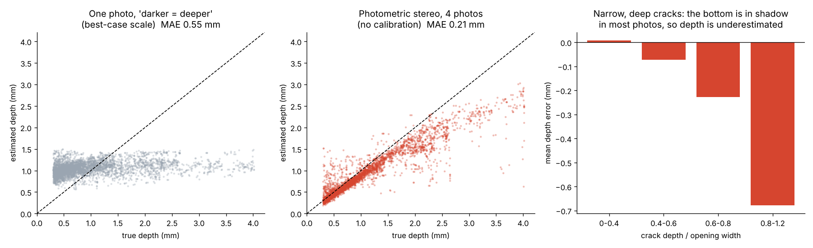

Project · Computer vision · Photometric stereo
Crack Depth Explorer
Measure cracks in 3D (depth, width and length in millimetres) from four ordinary photos. The camera stays still and only the light moves; the surface is reconstructed with photometric stereo, then every crack is found and measured. Built for concrete, stone, plaster and asphalt.
- Mean depth error
- 0.21 mm
- vs. single photo
- 2.6× more accurate
- Detection P / R
- 0.96 / 0.97
- Python
- NumPy / SciPy
- OpenCV
- scikit-image
- photometric stereo
- Poisson integration
Live demo
The full pipeline, running in your browser
The four photos below are a rendered concrete surface whose true 3D shape is known, so the page can score its own result. Turn a light off, change the assumed light angle, or click two points on the image to measure a cross-section.
Click two points on the image to draw a cross-section.
Cross-section
3D surface
Drag to rotate · scroll or pinch to zoom.
Crack segments (longest first; numbers match the image)
| # | Length | Mean depth | Max depth | Mean width | Max width |
|---|
How it works
From four photos to millimetres
In one photo a crack is darker than its surroundings, but brightness also depends on the material's colour, dirt, shadows and crack width; a single image holds no height information. With three or more photos lit from known directions, the surface orientation and the surface colour of every pixel can be solved separately.
- LinearisePhone JPEGs are sRGB-encoded; convert back to linear brightness.
- Normals + albedoPer pixel, least squares for
I = L · (albedo · n). The darkest observation is dropped when it looks like a cast shadow; the other three still fix the normal. - Height mapNormals give slopes; the Poisson equation is solved with a discrete cosine transform (Simchony et al. 1990), then the tilt is removed.
- Crack depth
closing(height) − height: the black-hat transform on heights gives depth below the local surface. - Crack maskHysteresis on depth (≥ 0.4 mm somewhere, continues while ≥ 0.15 mm); a shape filter removes round air voids.
- MeasureSkeleton split at junctions into segments: length, depth, and width at half depth (the chipped top edge is not well defined).
Validation
Tested against surfaces with known depth
A renderer creates cracked concrete with a known 3D shape (roughness, air voids, mottled colour, branching cracks of varying depth and width), lit from four sides with cast shadows, sensor noise and sRGB gamma. The pipeline was run on 20 unseen scenes and compared at 41,299 crack centre-line points (true depth 0.3–4.0 mm).
| Photometric stereo (4 photos) | One photo, "darker = deeper" (best-case scale) | |
|---|---|---|
| Depth: mean abs. error | 0.21 mm | 0.55 mm |
| Depth: median abs. error | 0.10 mm (13 %) | 0.46 mm |
| Depth: correlation | 0.93 | 0.31 |
| Width at half depth: median error | 0.14 mm | not measurable |
| Detection precision / recall | 0.96 / 0.97 | n/a |

Where it fails
In a crack that is deep compared with its width (depth/width > 0.8), the bottom is in shadow in most photos and cannot be seen. Depth is then underestimated by about 0.7 mm: for narrow, deep cracks the measured depth is a lower bound.
Robustness
- Light elevation off by ±5° → depth shifts by ~0.1 mm
- 6× more sensor noise → MAE 0.16 → 0.19 mm
- 3 lights instead of 4 → MAE 0.19 mm (no spare light for shadows)
Try your own
Analyse your own four photos
- Phone on a tripod or a stack of books, looking straight down. Lock focus and exposure.
- Put a ruler in the picture to get the pixel size.
- Darken the room. Hold a torch at the same distance each time, as far away as practical, about 45° above the surface.
- Take four photos: light from the top of the image, then right, bottom, left.
Photos are processed on your device and never uploaded. Large photos are scaled to 640 px wide; the pixel size is adjusted automatically.